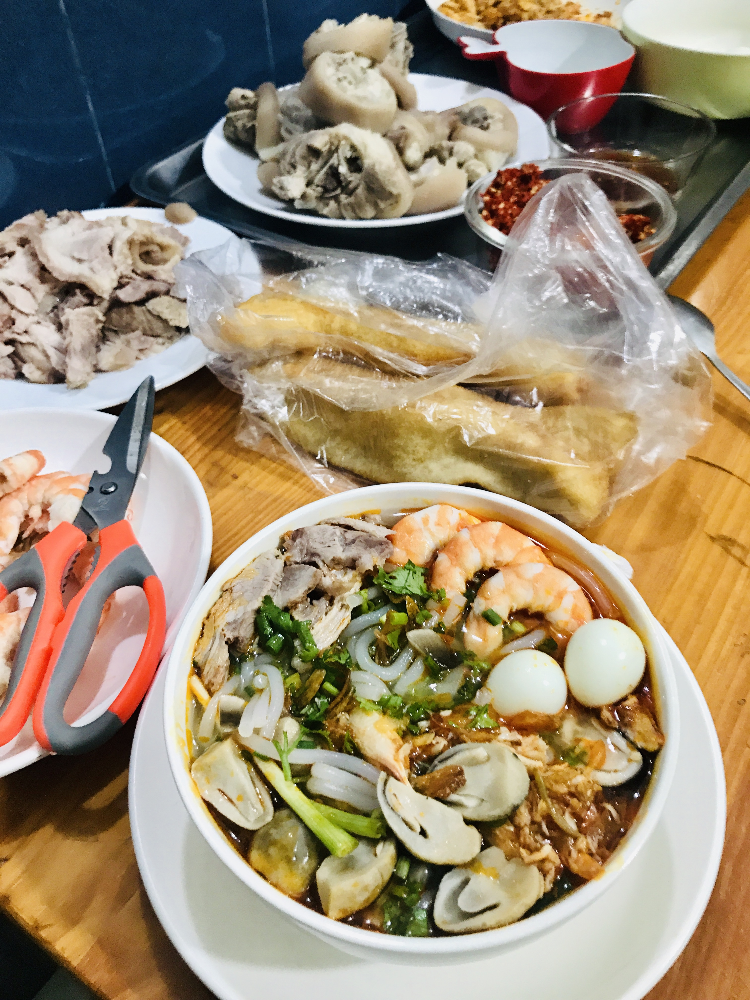
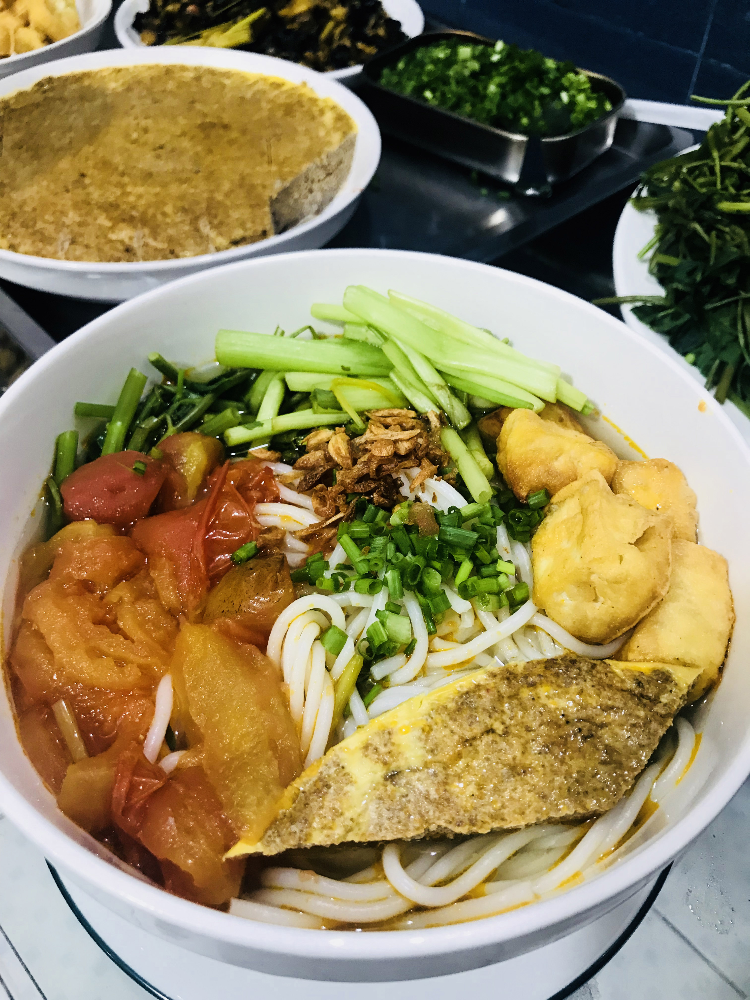
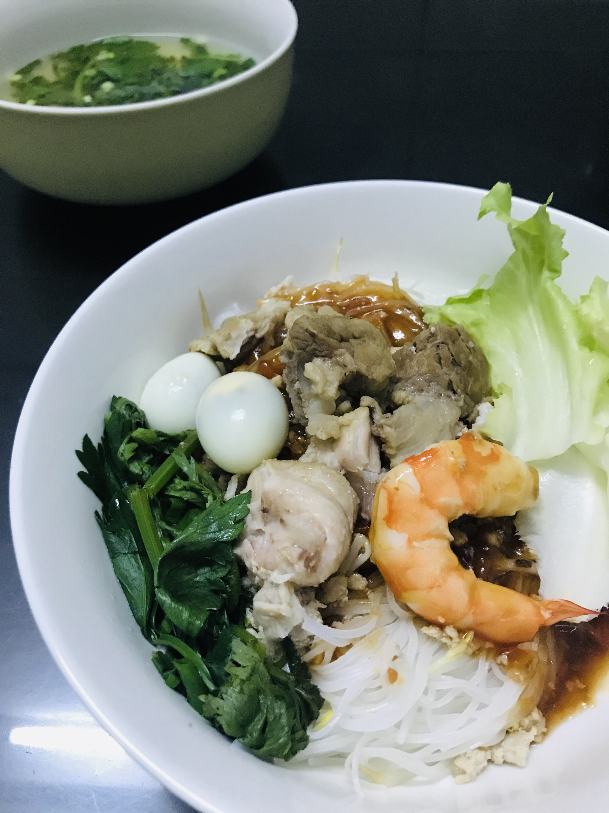

Southern Vietnam is the heaven for noodle lovers as you can find all sorts of noodle type here. This is because they are not only made from the usual rice but also from wheat, buckwheat, and egg. Changing the method of production, ratio of ingredients, size of the trands, and way of cooking help diversify the noodle as well. Besides the usual 'chicken pho' or 'beef pho', you should also check out bun (rice vermicelli), banh canh (rice noodle), hu tieu (semi-transparent rice vermicelli), mien (glass noodle), or mi (noodle). Some of them even have a dry (without soup) and a watery (with soup) version, so you can have them chewy or soaggy.